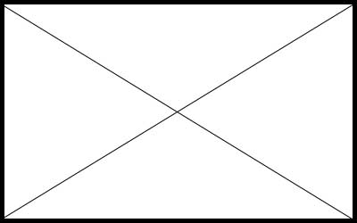

The Basics of
Machine Learning

No magic, just math!
Regression
Predicting numbers!
\(x = {5 \over 9}\)
Overfitting and Underfitting
Clustering
K-Means
Classification
Support Vector Machines (SVM)
Classification
Neural Networks
Demo
Popular Libraries
How to Learn More?
Thank you!